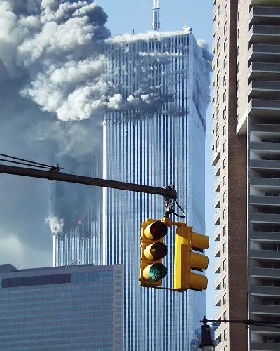
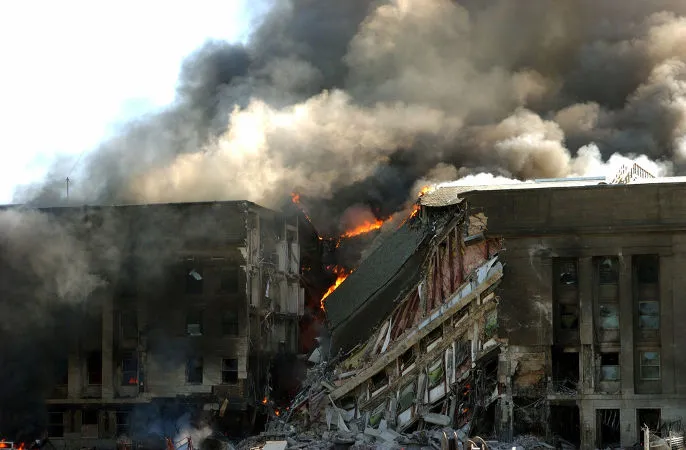
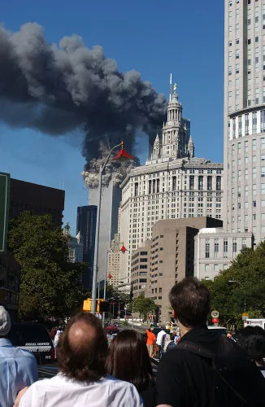

O 11 de setembro ficou marcado na história como o dia em que atentados terroristas foram
realizados em solo americano e resultaram na morte de quase três mil pessoas. Os terroristas
responsáveis pelo atentado eram vinculados a Al-Qaeda e realizaram seus ataques contra dois alvos: o
World Trade Center, localizado em Nova York, e o Pentágono, localizado em Washington.
Os atentados de 11 de setembro tiveram como um dos grandes responsáveis Osama bin Laden e geraram
grandes consequências a nível regional (nos EUA) e também mundial. Poucas semanas depois que
aconteceram, o governo norte-americano deu início à Guerra do Afeganistão, com o objetivo de
capturar o líder da Al-Qaeda.

Torres Gêmeas foram atacadas por dois Boeing às 08:46 e às 09:03 do dia 11 de
setembro de 2001.[1]
Causas e contexto histórico do atentado
Os atentados de 11 de setembro foram realizados pela Al-Qaeda, que, na época, era liderada por Osama
bin Laden , um árabe multimilionário e um dos fundadores dessa organização terrorista. As motivações
que levaram bin Laden e a Al-Qaeda a realizarem atentados contra os Estados Unidos são o resultado
de um longo processo que se iniciou na década de 1970.
Levando em consideração esse contexto, devemos entender que a motivação do ataque foi a inimizade
existente dos fundamentalistas islâmicos e os Estados Unidos. Essa era motivada pelas intervenções
dos norte-americanos nas nações do Oriente Médio e por seu apoio ao Estado de Israel.
O que aconteceu no 11 de setembro?

Pentágono, sede do Departamento de Defesa dos EUA, também foi atacado no dia 11 de
setembro de 2001.
Os atentados que aconteceram em 11 de setembro de 2001 foram realizados por 19 terroristas da
organização chamada Al-Qaeda. O início dos atentados deu-se com o sequestro de quatro aviões
comerciais, sendo dois Boeing 757 e dois Boeing 767, que decolaram da costa leste dos Estados Unidos
com direção para a Califórnia.
Os terroristas sequestraram os seguintes voos: Voo 11, Voo 77 e Voo 175, da American Airlines, e Voo
93, da United Airlines. Esses decolaram das cidades de Boston, Washington e Newark, com direção a
Los Angeles e San Francisco. Dos quatro voos mencionados, três conseguiram atingir seus alvos, mas o
quarto, como veremos, caiu antes de atingir seu alvo. Nesse dia, os 19 terroristas embarcaram, e,
quando as aeronaves já estavam no ar, renderam a tripulação e os passageiros, e então reajustaram as
rotas das aeronaves para seus alvos.
Ao todo, os atentados de 11 de setembro causaram a morte de 2996 pessoas (esse número inclui os 19
terroristas). Entre o total de mortos, 2606 pessoas morreram em Nova York; 246, nos aviões; e 125,
no Pentágono. Como mencionado, os 19 que faltam nessa conta eram os terroristas que realizaram o
atentado.
World Trade Center e a imagem do atentado
A imagem mais destacada desse ataque foi, naturalmente, a do ataque ao World Trade Center, pois,
depois do choque com os aviões, as conhecidas Torre Gêmeas incendiaram-se. Milhares de pessoas
ficaram encurraladas nos andares mais altos do prédio e, infelizmente, não conseguiram sair,
enquanto isso, os bombeiros e socorristas conduziram o trabalho de evacuação do prédio.
O impacto dos aviões e o incêndio fizeram o World Trade Center desabar poucos
minutos depois.[2]
O incêndio que se iniciou nas Torres Gêmeas superaqueceu as estruturas do prédio e fez com que ambas
fossem abaixo. Às 09:59, a Torre Sul desabou, e às 10:58, foi a vez da Torre Norte. A queda delas
afetou construções ao lado, danificando-as e espalhando o incêndio.
Antes do atentado, o World Trade Center era um complexo que possuía sete edifícios que abrigavam
centenas de empresas das mais variadas áreas. Dentro desse complexo, estavam as Torres Gêmeas,
inauguradas em 1973, e que possuíam 417 metros de altura, sendo uma das construções verticais mais
altas do mundo. No dia do atentado, cerca de 15 mil pessoas estavam nelas, e, em meio ao desespero,
muitas dessas, encurraladas pelo fogo, lançaram-se dos andares onde estavam.
Os responsáveis pelo atentado
Como mencionado, o ataque foi realizada pela Al-Qaeda, que, na época, era liderada por Osama bin
Laden. Não obstante, o grande nome que planejou os detalhes dos atentados foi Khalid Sheikh
Mohammed, um dos expoentes do grupo fundamentalista. Tanto bin Laden quanto Khalid estiveram por
trás de outros atentados contra os Estados Unidos.
Bin Laden participou do ataque contra a embaixada norte-americana no Quênia, em 1998, e Khalid esteve
envolvido com o ataque com um carro-bomba que destruiu a entrada do World Trade Center, em 1993. Bin
Laden acabou sendo morto em 2011, e Khalid está preso sob jurisdição norte-americana, desde 2003.
Consequências do atentado
Depois dos atentados, a reação do governo norte-americano foi imediata e focou no endurecimento das
medidas de segurança no país, com grande foco nos aeroportos, e na represália contra seus
perpetradores. A revanche estadunidense deu-se por meio da invasão do Afeganistão, ainda em 2001.
A invasão do Afeganistão foi autorizada pelo então presidente dos Estados Unidos, George W. Bush, e
tinha dois objetivos: capturar Osama bin Laden e derrubar o Talibã, grupo que governava aquele país
desde a década de 1990. A busca por bin Laden deu-se porque ele reconheceu em vídeo ter sido o autor
dos ataques.